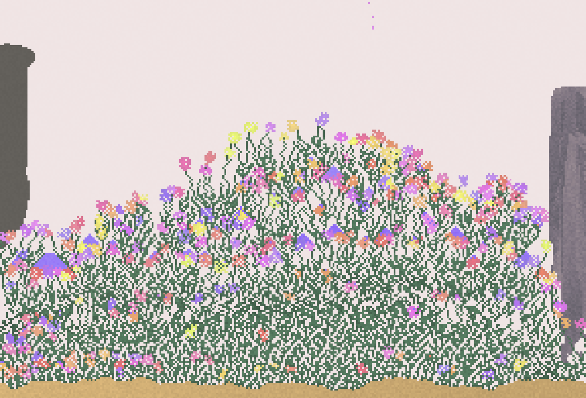
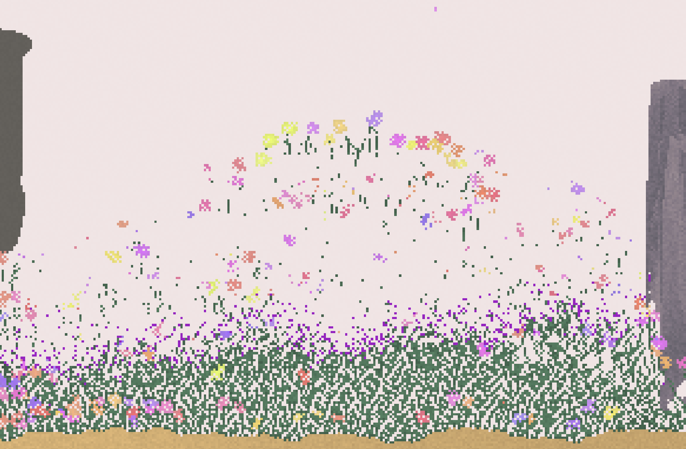

00 / OPENING0 / 5

Arrive
Goal: Understand who needs help.
Input: Click “Begin wandering.”
Feedback: A closed flower stirs; a cloud glimmers.
Continue: Enter the first small glade.
A COZY ADVENTURE ABOUT WONDER
In a galaxy full of stars,
even the planets have dreams.
One little traveler. Five lost dreams.
A whole world waiting to wake up.

Nova is a tiny space traveler who discovers a planet that has forgotten how to dream happily.
Its flowers are closed, its colors have faded, and its stars have stopped twinkling. But its dreams are leaking into the landscape: a cloud becomes a whale, a rock grows legs, and a little doorway opens into an impossible world.
Nova follows these wonderful changes and collects five lost dream fragments. Each discovery returns a little color and life. When the fifth fragment is found, the planet awakens—and its imaginary creatures stay.
Here, hallucination is a fictional, dreamlike change in what the world seems to be. Familiar things reveal impossible lives. The player learns that an unexpected perception can open a path to discovery. This is a magical story about a dreaming planet, rather than a clinical portrayal.
“The universe is even more wonderful
when you let your imagination wander.”
One action grows in meaning: first reveal a dream, then follow its clue, then use that clue inside a miniature world.
OPENING / ARRIVE
Nova lands beside closed flowers. A softly glowing cloud is the first invitation to explore.
Input: select “Begin wandering.” Feedback: Nova enters the glade and a cloud gains an outline.
These controls preview the proposed journey and tracker. The playable exploration game is planned for Week 2.
Goal: Understand who needs help.
Input: Click “Begin wandering.”
Feedback: A closed flower stirs; a cloud glimmers.
Continue: Enter the first small glade.

Goal: Discover the interaction.
Input: Click the outlined cloud, then its revealed fragment.
Feedback: A whale unfurls, a chime sounds, and nearby flowers open.
Continue: At 1 / 5, a path to the meadow lights up.

Goal: Read the world's clues.
Input: Follow and click a walking rock; inspect a flower that grows enormous.
Feedback: Each reveals a fragment. Footprints and pollen point onward.
Continue: At 3 / 5, a dancing star reveals a doorway.

Goal: Use the familiar clue in a new place.
Input: Click the dancing star for fragment four; enter its portal and find the outlined star.
Feedback: The tiny world shimmers and yields fragment five.
Continue: Return automatically for the awakening.

Goal: Enjoy the change you made.
Input: Choose “Keep wandering” or “Dream again.”
Feedback: Flowers bloom, colors warm, and the whale stays.
Continue: Explore freely or deliberately restart at 0 / 5.
Proposed game flow · stage gates keep progress clear while each area allows free exploration.
Surprises happen in the world while Nova explores; there is no mode-switching button. Each stage has a small set of authored events that can appear at varied times. Once an event is noticed, its fragment remains available.
Stars raining upward, a second moon, and an ocean-colored ground are optional ambient effects. They never hide a required clue or change the controls.
I was drawn to Sandspiel’s natural elements and the chance to create and sustain a living garden. The possibility of destroying it through my choices made each experiment meaningful.
Play Sandspiel ↗CREATOR RESEARCH / VERIFIED SOURCE
In Making Sandspiel (April 30, 2019), Bittker describes building the game in late 2018. He connects play with experimentation and imagination, and explains his effort to make touch interactions direct.
Contributor credit: Bittker credits Pavel Dobryakov’s fluid simulation as a foundation he adapted. The game and its visual system are credited to Max Bittker; no separate music credit is established in this source.
MY OBSERVATION & INTERPRETATION
The accessible controls let me experiment quickly, which aligns with Bittker’s account of direct interaction. However, I wanted a clearer goal to sustain my attention. That is my preference, not evidence that the open-ended design fails for everyone.
I heard no sound during my session and felt less immersed. This inspired my plan for optional music and environmental sound in Cosmic Daydreamer; it does not establish how every Sandspiel session sounds.
MOMENT 01 / FIRST IMPRESSION
I found the controls and instructions easy to follow as I grew plants, added water and mites, and experimented with wind. Without audible sound, the scene felt less immersive to me. I imagined wind, rain, and subtle growth cues making the garden feel more alive.
MOMENT 02 / A MEANINGFUL SURPRISE
Watering the plants produced a healthy, colorful garden (Figure 1). After I added mites, the plants were consumed and gradually disappeared (Figure 2). I interpreted this change as a reminder of the cycle of life: creating a garden also meant understanding what could destroy it.
MOMENT 03 / REVISED UNDERSTANDING
As I learned how the elements affected one another, I began choosing them more deliberately to build and reshape my garden. Wind produced unexpected forms, while fire destroyed plants and wood. These results taught me to anticipate consequences rather than treat every new element as beneficial.


Actions and responses summarize my play notes. The final column records what I learned from those events.
| Event | Player action | Observed game response | My understanding |
|---|---|---|---|
| 01 | Added sand as a base for the seeds. | The seeds settled into the sand. | I could use sand as the foundation of my garden. |
| 02 | Watered the seeds in the sand. | Plants grew into colorful flowers. | Combining elements could support growth; water, sand, and seeds worked together. |
| 03 | Added mites to the garden. | The mites consumed the plants, leaving gaps in the foliage. | A new element could damage what I had created. Maintaining the garden required understanding its interactions. |
| 04 | Applied wind to the scene. | The flowers shifted into unexpected shapes. | Wind offered a creative effect, but I preferred to use it sparingly because the result was unpredictable. |
| 05 | Added fire to the garden. | The plants and wood were destroyed; the wall and stone remained. | Elements reacted differently to the same action. One choice could selectively destroy parts of the garden. |
MY CONCLUSION / FROM RESEARCH TO DESIGN
Sandspiel taught me the value of clear cause and effect. In Cosmic Daydreamer, I will combine freedom to explore with a clear opening, a five-fragment goal, and visible feedback that helps players understand what their actions changed. I will also use optional dreamy lo-fi music and gentle environmental sounds to support the relaxed, immersive mood I missed during my Sandspiel session.
AI initially connected simple actions with surprise. I challenged whether surprise always feels relaxing and whether every player wants the same amount of unpredictability.
My garden experiments made those questions concrete: mites destroyed plants I had nurtured, while wind created forms I enjoyed but could not fully predict.
“In Sandspiel, simple actions can produce surprising changes, which could inspire your Dream Surprises.”
I questioned whether surprise always feels relaxing. I want my game to be full of wonder while remaining cozy, and players may prefer different amounts of unpredictability.
Surprise can create wonder, but it can also create pressure. Use gentle transformations, keep discovered fragments available, and let players revisit missed events.
Selected exchange from my actual AI discussion, condensed for clarity. The two challenges are connected below to my subsequent account of playing Sandspiel.
GAP 01 / EMOTIONAL ASSUMPTION
What I challenged: The initial analysis treated surprise as a benefit without considering its emotional cost. In my garden, adding mites unexpectedly removed plants I had grown. I saw a meaningful cycle of life, but this also exposed the risk of losing my creation.
Design decision: Cosmic Daydreamer will make surprises opportunities rather than punishments. Collected fragments stay collected, missed events return, and transformations use gentle visual and audio cues.
GAP 02 / PLAYER DIFFERENCES
What I challenged: The analysis assumed everyone enjoys the same unpredictability. I liked the shapes created by wind but preferred using it sparingly. I also wanted more structure despite finding the controls easy. These are my preferences, not a universal player response.
Design decision: Keep exploration open within three short stages, with a visible five-fragment goal, optional hints, and “Gentle guidance” for players who want clearer direction.
After discussing the concept with AI, I refined the balance between exploration and structure. Players should have room to wander, while the story, clues, and clear mission help them progress toward the ending at their own pace.
The discussion helped me separate unpredictability from confusion. I will keep the surprise in what the world reveals, while making controls, feedback, and progress dependable. Week 3 playtesting will check whether that balance feels both wondrous and cozy.
The supplied references suggest pastel skies, luminous plants, tiny figures, and impossible scale. The prototype translates this atmosphere into simple 2D forms.


The five inspiration images were generated with ChatGPT, as identified by Lana Harkin, who supplied them. The tool links identify the generation service; the original conversations are not publicly linked. The concept art and storyboard above are original AI-assisted SVG illustrations made for this proposal.
#202B48#A9A2D8#EFB8D4#A7DED7#FFE8ABGeorgia gives the title a storybook voice; a system sans serif keeps controls and body text clear. Use a small, fixed fragment counter, text labels with icons, and generous buttons. Gold plus a star shape distinguishes collectibles without relying on color alone.
Rounded 2D silhouettes and layered gradients keep the art achievable. Whales drift slowly; flowers unfold after collection. No flashes or screen shake. Reduced motion replaces drifting and pulsing with still poses and clear outlines.
Dreamy lo-fi background music will support relaxed exploration, with soft chords, a slow pulse, and no sudden loud accents. Quiet wind, rain, and plant-growth cues will make the planet feel alive. A bell confirms a fragment, a rising phrase marks a portal, and a gentle chord marks awakening. Music and effects will have separate mute controls; all essential feedback also appears visually.
Try a soft fragment cue. This synthesized sketch is a direction for testing, not final game audio.
Sound is off until you choose to play it.
Sound research reference: in a creator interview with Jakub Dvorský, he describes audio and visuals as jointly shaping atmosphere and discusses balancing a living soundscape with the actions a player needs to notice. Application here: keep reward cues audible but restrained. No audio from Amanita Design is included.
One compact landscape, five authored discoveries, one reusable dream room, and a clear transformation at the end. Target: a short, complete browser experience.
Done when: A player can complete the journey from 0 / 5 to 5 / 5 and restart without getting stuck.
Done when: Testers can identify the goal and complete all three stages; confusing or startling moments have been revised and retested.
HTML, CSS, JavaScript; simple 2D art; mouse/touch plus keyboard alternatives; no account or installation required.
Upward star rain, a temporary second moon, and the ocean-color effect. Add these only after the complete journey is reliable.
Random events can hide progress. Use a small authored event pool, a maximum wait, persistent clues, and replayable discoveries.
Cosmic Daydreamer brings the pleasure of discovery into a small, welcoming adventure. The proposal connects my Sandspiel research to a clear design goal: give players freedom to explore while helping them understand how each discovery brings the planet back to life.
Game concept, gameplay observations, screenshots, and personal reflections: Lana Harkin. AI assistance supported research, editing, design development, original SVG illustrations, webpage implementation, and the synthesized sound sketch.
This is the Week 1 proposal. The playable game will be developed and tested during Weeks 2 and 3.